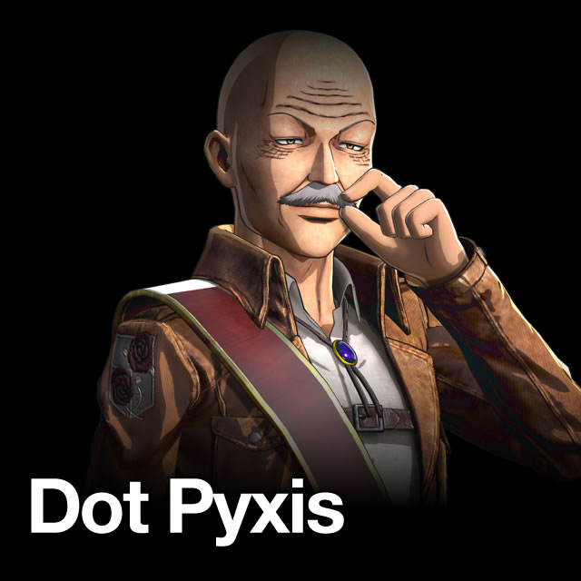
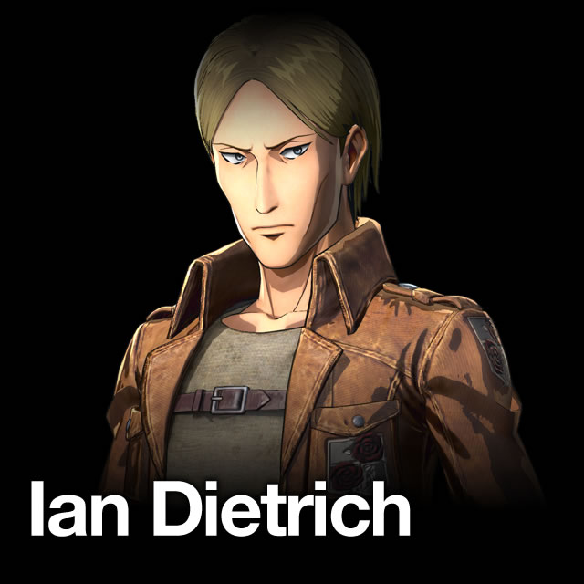
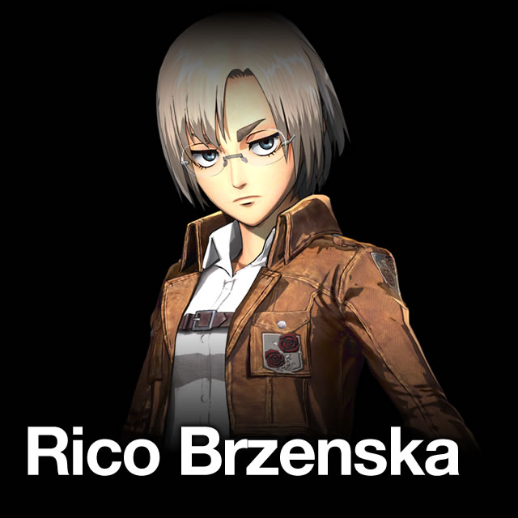

- Кадетский корпус
- Разведкорпус
- Военная полиция
 Гарнизон стен
Гарнизон стен
Дот Пиксис
Дот - Главнокомандующий Гарнизона. Он сохраняет спокойствие и беззаботное поведение, даже посреди хаоса. Кроме того, он харизматичный лидер, что показывается, когда он успокаивает всех солдат, пытающихся поднять бунт. Он — опытный стратег, и в состоянии оценить ситуацию тщательно, но также и знает, когда нужно рискнуть.
Ян Дитрих
Ян - капитан передового отряда во время битвы за Трост. У Яна строгий характер, обычно он краток и не задаёт лишних вопросов.
Рико Брженская
Рико - капитан передового отряда во время битвы за Трост. Она является честным и несколько беспристрастным человеком.

Дот - Главнокомандующий Гарнизона. Он сохраняет спокойствие и беззаботное поведение, даже посреди хаоса. Кроме того, он харизматичный лидер, что показывается, когда он успокаивает всех солдат, пытающихся поднять бунт. Он — опытный стратег, и в состоянии оценить ситуацию тщательно, но также и знает, когда нужно рискнуть.

Ян - капитан передового отряда во время битвы за Трост. У Яна строгий характер, обычно он краток и не задаёт лишних вопросов.
